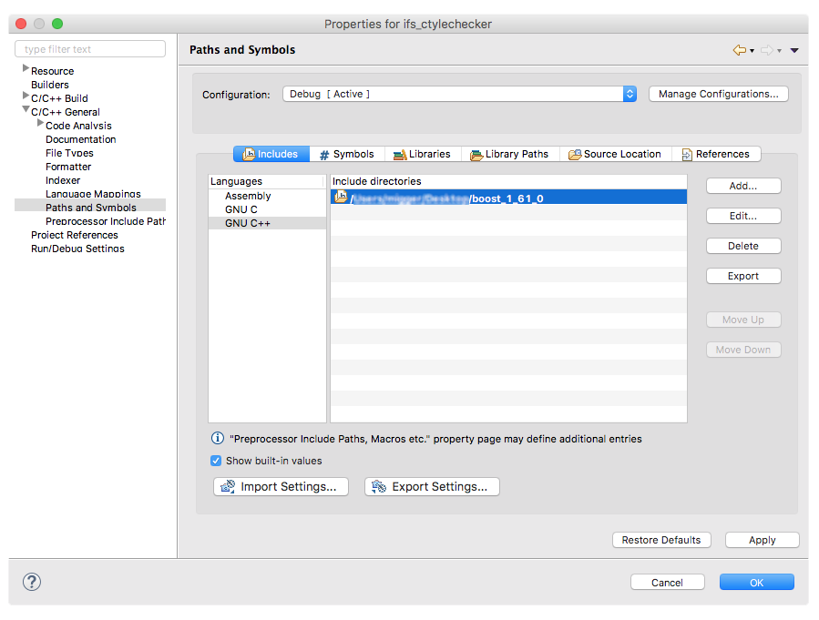

Please use our GitHub Issue Tracker to report bugs and feature requests .
This is usually caused by an outdated Java version. Cevelop requires Java 8 to run. Here are some links to get you started:
Please contact us with your requirements. We might find an agreement. Financial support is always appreciated, but we can't yet accept micropayments.
Major parts of Cevelop are Open Source as Eclipse CDT to which we actively contribute, especially in the area of the C++ parser and refactoring infrastructure.
However, many of the Cevelop-specific extensions have been created with Swiss tax payer's money and we are obliged to make revenue within our university to sustain our workforce. Funding can result in more and better features of Cevelop and other tools we develop. No funding might mean that we can not sustain it, and we do not want vendors selling Eclipse CDT-based IDEs to benefit from our work, without even recognizing it was done by us. However, with financial compensation we are happy to provide corresponding licenses and support, as long as we can continue to use Cevelop for our students. Please contact us.
Cevelop is based on the Eclipse C/C++ Development Tools, which handles the detection of the toolchain. If you've installed MinGW and Cevelop doesn't find it, please see the Eclipse FAQ.
One of the trickiest tasks to get right when setting up a project in Cevelop is the include paths. This Eclipse newsletter discusses the several options and configuration dialogs.
To suppress a message, you can add a line comment that specifies the message to suppress. For example:
char* name = "Cevelop"; // @suppress("Use std::string instead of C-Strings.")
In the future, we plan to have a quick-fix that adds the correct suppression message for you, but at the moment, you'll need to look it up in the preferences:
The name of the problem is used in the suppression comment. You can also deactive an analysis completely to silence it. Customize Selected... gives you further configuration options for the analysis. For example, you can change the suppression pattern.
You can edit the cevelop.sh script to force Cevelop to use GTK2.
To include boost headers you first have to download the newest header files from the official boost homepage and unpack them to the location of your choice. In Cevelop, right-click on your project and choose Properties. In C/C++ General → Paths and Symbols you can include the boost directory as follows:
Click Apply and close the dialogue. You are now able to include boost headers in your project files. Note that this does not only work for boost, but any header files you would like to include in your project.